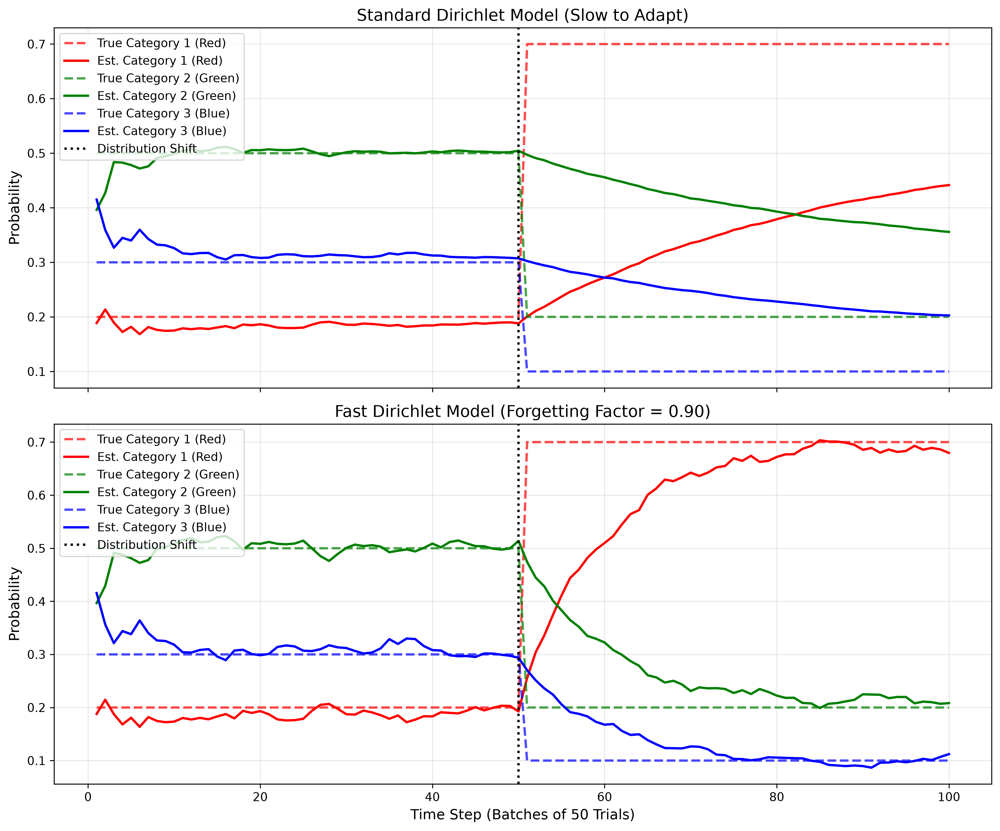

Multinomial-Dirichlet and Multivariate Normal Conjugate Models
So far, we have looked at binary outcomes (Binomial) and continuous numbers (Normal). But what if we have a system with multiple categories? For example, predicting whether a user will "Click", "Skip", or "Close" an ad (3 categories), or classifying a document into one of 10 topics.
For \(K\) categories, we observe a vector of counts \(\mathbf{x} = [x_1, x_2, \dots, x_K]\). The probability of each category is given by a vector \(\mathbf{p} = [p_1, p_2, \dots, p_K]\), where \(\sum p_i = 1\).
Likelihood (Multinomial): \(P(\mathbf{x} \mid \mathbf{p}) \propto \prod_{i=1}^K p_i^{x_i}\)
Prior (Dirichlet): This is the multivariate generalization of the Beta distribution. It is defined by a vector of parameters \(\boldsymbol{\alpha} = [\alpha_1, \dots, \alpha_K]\).
Posterior: Multiplying the prior by the likelihood gives us a new Dirichlet distribution. The update is incredibly simple: just add the counts to the \(\alpha\) vector.
The expected probability of category \(i\) is \(E[p_i] = \frac{\alpha_i}{\sum_{j=1}^K \alpha_j}\).
Just like the Beta-Binomial model, if user preferences change, the Dirichlet model will be too stubborn to adapt. We apply a forgetting factor \(f\) to the entire \(\boldsymbol{\alpha}\) vector before adding the new counts:
In Chapter 6, we tracked a target in 2D space using a Bivariate Normal model. But self-driving cars and aircraft must track objects in 3D space (X, Y, Z) or even higher dimensions (adding velocity, acceleration, etc.).
The math is a direct, beautiful generalization of the 2D model. Instead of a 2x2 covariance matrix, we use a \(D \times D\) matrix.
Precision Matrix: We compute the inverse of the covariance matrix, \(\Lambda = \Sigma^{-1}\).
When we observe a new \(D\)-dimensional data point \(\mathbf{x}\), the precision matrix (which is now a \(D \times D\) matrix) and the mean vector (of size \(D\)) are updated as follows:
To make a 3D radar track a fast-moving missile, we discount the prior precision matrix by multiplying it by \(f\) (e.g., \(f=0.90\)). This inflates the 3D confidence ellipsoid, allowing the model to quickly shift to the new location.
The graph below shows a 3-category system (e.g., a user choosing between Red, Green, or Blue). Initially, the true probabilities are [0.2, 0.5, 0.3]. At step 50, a UI redesign causes the probabilities to shift to [0.7, 0.2, 0.1].
Notice how the forgetting factor (\(f=0.85\)) allows the models to completely forget the old preferences and smoothly converge on the new reality.

import numpy as np
import matplotlib.pyplot as plt
import os
# Ensure the images directory exists
os.makedirs('images', exist_ok=True)
class FastOnlineDirichletModel:
def __init__(self, n_categories, alpha_prior=1.0, forgetting_factor=1.0):
# Initialize the alpha vector with 1.0 for each category (uniform prior)
self.alphas = np.ones(n_categories) * alpha_prior
self.ff = forgetting_factor
def update(self, counts_vector):
# Apply forgetting factor to the entire alpha vector, then add new counts
self.alphas = (self.alphas * self.ff) + counts_vector
def get_expected_probabilities(self):
# The expected probability for each category is alpha_i / sum(alphas)
return self.alphas / np.sum(self.alphas)
# 1. GENERATE DATA (True probs jump at step 50)
np.random.seed(42)
n_steps = 100
n_categories = 3
# Phase 1: Red=20%, Green=50%, Blue=30%
# Phase 2: Red=70%, Green=20%, Blue=10%
data_list = []
for i in range(n_steps):
if i < 50:
true_probs = [0.2, 0.5, 0.3]
else:
true_probs = [0.7, 0.2, 0.1]
# Simulate 10 observations per step
counts = np.random.multinomial(10, true_probs)
data_list.append(counts)
# 2. INITIALIZE MODELS
std_model = FastOnlineDirichletModel(n_categories, forgetting_factor=1.0)
fast_model = FastOnlineDirichletModel(n_categories, forgetting_factor=0.85)
# Lists for plotting
std_probs_history = []
fast_probs_history = []
# 3. RUN SIMULATION
for counts in data_list:
std_model.update(counts)
fast_model.update(counts)
std_probs_history.append(std_model.get_expected_probabilities())
fast_probs_history.append(fast_model.get_expected_probabilities())
# Convert to numpy arrays for easier slicing
std_probs_history = np.array(std_probs_history)
fast_probs_history = np.array(fast_probs_history)
# 4. PLOT
fig, (ax1, ax2) = plt.subplots(2, 1, figsize=(12, 10), sharex=True)
# Top plot: Standard Model (Slow)
ax1.plot(range(1, n_steps + 1), std_probs_history[:, 0], color='red', label='Category 1 (Red)')
ax1.plot(range(1, n_steps + 1), std_probs_history[:, 1], color='green', label='Category 2 (Green)')
ax1.plot(range(1, n_steps + 1), std_probs_history[:, 2], color='blue', label='Category 3 (Blue)')
ax1.axvline(x=50, color='black', linestyle='--', alpha=0.5)
ax1.set_title('Standard Dirichlet Model (Stationary Assumption)', fontsize=12)
ax1.set_ylabel('Probability')
ax1.legend(loc='upper left')
ax1.grid(True, alpha=0.3)
# Bottom plot: Fast Model (Forgetting)
ax2.plot(range(1, n_steps + 1), fast_probs_history[:, 0], color='red', label='Category 1 (Red)')
ax2.plot(range(1, n_steps + 1), fast_probs_history[:, 1], color='green', label='Category 2 (Green)')
ax2.plot(range(1, n_steps + 1), fast_probs_history[:, 2], color='blue', label='Category 3 (Blue)')
ax2.axvline(x=50, color='black', linestyle='--', alpha=0.5)
ax2.set_title('Fast Dirichlet Model (Forgetting Factor = 0.85)', fontsize=12)
ax2.set_xlabel('Time Step (Batches of 10 Trials)')
ax2.set_ylabel('Probability')
ax2.legend(loc='upper left')
ax2.grid(True, alpha=0.3)
plt.tight_layout()
# Save to the images folder
plt.savefig('images/dirichlet_graph.png', dpi=300, bbox_inches='tight')
plt.show()